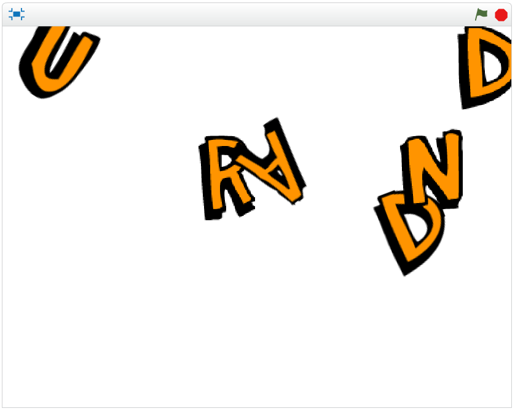
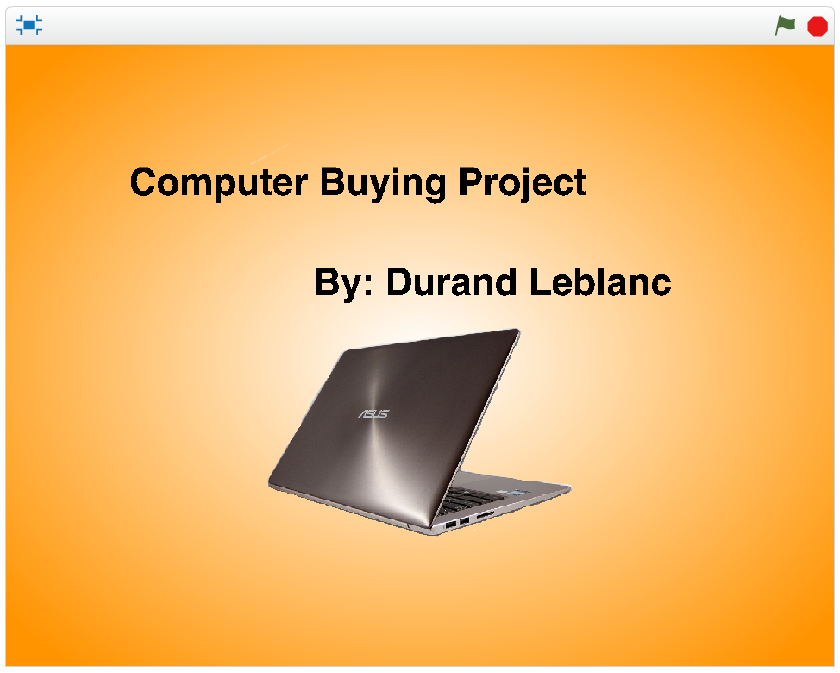
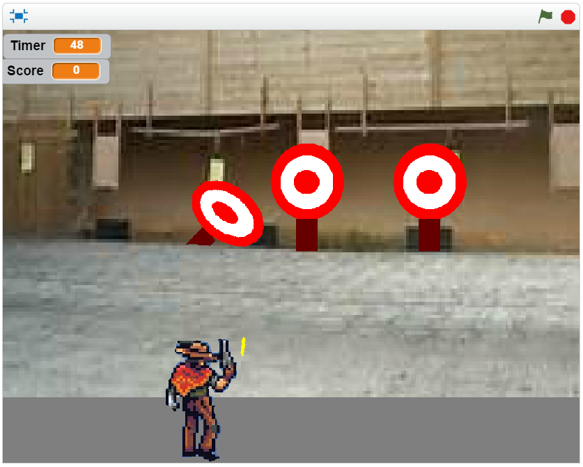

Scratch content
Name assignment

Description:
Use scratch to design a program that shows your name. The requirements were to have an individual sprite per each letter, and each had to have a unique behavior. When green flag is pressed, it should start, and it should reset for extra credit.
Concepts learned:
- How to use event blocks- I used the “when green flag pressed…” block to start it.
- Conditional statements- I used the “if...then” block to trigger certain events
- Loops- I used the “forever” loop to have my sprites do (actions) infinitely.
- Sprites- I had to go search out the proper sprites for my name.
Computer buying project

Description:
Use scratch to create a presentation on buying a computer for someone. It required us to use Scratch, and sprites.
Concepts learned:
- Conditional statements-used “if” statements to trigger events.
- Events-used for triggering slide changes (used broadcasts)
- Parts of a computer and what makes them more expensive than others-had to do research on computers which prompted learning the components of a computer
Final scratch project

Description:
use Scratch to design a game or story (chose game). It must reset, use broadcasts, and have level progression.
Concepts learned:
- Re-learned how to use loops-for continuing the game and for target pop-ups
- Re-learned how to use events-used for triggering score
- Used variables-for scoring and timer
- Used operators-adding score, randomly popping up targets